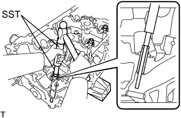
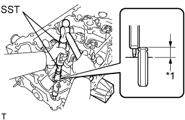
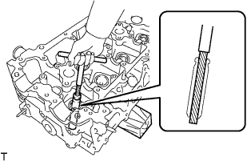
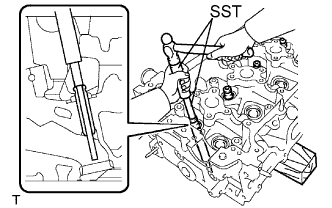
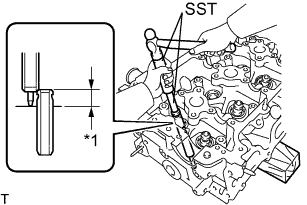
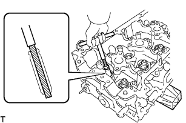

ГОЛОВКА БЛОКА ЦИЛИНДРОВ > ЗАМЕНА |
| 1. ЗАМЕНИТЕ НАПРАВЛЯЮЩУЮ ВТУЛКУ ВПУСКНОГО КЛАПАНА |
Нагрейте головку блока цилиндров до температуры 80–100°C (176–212°F).
Поместите головку блока цилиндров на деревянные бруски.
|  |
С помощью SST и молотка выбейте направляющую втулку.
С помощью индикатора часового типа для отверстий измерьте диаметр отверстия для втулки в головке блока цилиндров.
| Наименование | Заданные условия |
| Номинальное значение | 10,285 - 10,306 мм (0,405 - 0,406 дюйма) |
| Ремонтный 0,05 | 10,335 - 10,356 мм (0,407 - 0,408 дюйма) |
Выберите новую направляющую втулку клапана.
| Наименование | Заданные условия | |
| Диаметр гнезда втулки | 10,333 - 10,344 мм (0,4068 - 0,4072 дюйма) | 10,383 - 10,394 мм (0,4088 - 0,4092 дюйма) |
| Используемая втулка | Номинальное значение | O/S 0,05 |
Нагрейте головку блока цилиндров до температуры 80 – 100°C (176 – 212°F).
Поместите головку блока цилиндров на деревянные бруски.
|  |
С помощью SST и молотка вбейте новую направляющую втулку клапана до достижения заданной высоты выступания.
| *1 | Высота |
|  |
С помощью острой развертки на 5,5 мм разверните направляющую втулку клапана до получения номинального зазора между втулкой и штоком клапана.
| 2. ЗАМЕНИТЕ НАПРАВЛЯЮЩУЮ ВТУЛКУ ВЫПУСКНОГО КЛАПАНА |
Нагрейте головку блока цилиндров до температуры 80 – 100°C (176 – 212°F).
Поместите головку блока цилиндров на деревянные бруски.
|  |
С помощью SST и молотка выбейте направляющую втулку.
С помощью индикатора часового типа для отверстий измерьте диаметр отверстия для втулки в головке блока цилиндров.
| Наименование | Заданные условия |
| Номинальное значение | 10,285 - 10,306 мм (0,405 - 0,406 дюйма) |
| Ремонтный 0,05 | 10,335 - 10,356 мм (0,407 - 0,408 дюйма) |
Выберите новую направляющую втулку клапана.
| Наименование | Заданные условия | |
| Диаметр гнезда втулки | 10,333 - 10,344 мм (0,4068 - 0,4072 дюйма) | 10,383 - 10,394 мм (0,4088 - 0,4092 дюйма) |
| Используемая втулка | Номинальное значение | O/S 0,05 |
Нагрейте головку блока цилиндров до температуры 80 – 100°C (176 – 212°F).
Поместите головку блока цилиндров на деревянные бруски.
|  |
С помощью SST и молотка вбейте новую направляющую втулку клапана до достижения заданной высоты выступания.
| *1 | Высота |
|  |
С помощью острой развертки на 5,5 мм разверните направляющую втулку клапана до получения номинального зазора между втулкой и штоком клапана.
| 3. ЗАМЕНИТЕ РЕГУЛИРОВОЧНОЕ СОЕДИНИТЕЛЬНОЕ КОЛЬЦО КРЫШКИ ПОДШИПНИКА РАСПРЕДВАЛА |
Снимите соединительные кольца.
С помощью молотка с пластмассовым покрытием запрессуйте до упора новое соединительное кольцо.
| Параметр / Устройство | Высота | Ширина | Высота выступания |
| Соединительное кольцо | 7 мм (0,276 дюйма) | 10 мм (0,394 дюйма) | 2,5 - 3,8 мм (0,0984 - 0,150 дюйма) |
| *1 | Высота |
| *2 | Ширина |
| *3 | Высота выступания |
| 4. ЗАМЕНИТЕ ПРОБКУ № 1 |
Нанесите герметик на отверстие под пробку в головке блока цилиндров.
С помощью SST и молотка запрессуйте новую пробку в головку блока цилиндров, как показано на рисунке.